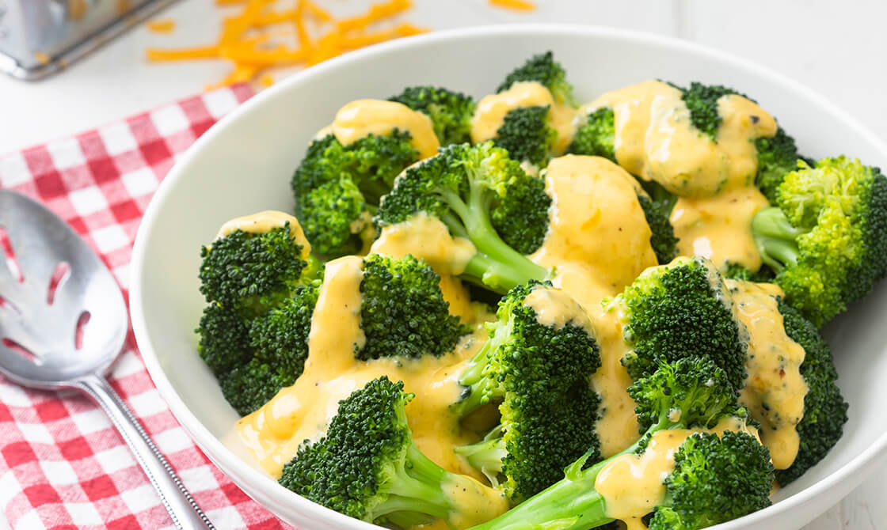

Cheddar Broccoli

Ingredients:
- 1 Pound Broccoli Florets
- 1/2 Cup Heavy Cream
- 1 Tbsp Butter
- 1 Tsp Dijon Mustard
- 1 Tsp Onion Powder
- 1 Tsp Garlic Powder
- 1/2 Tsp Pink Himalayan Salt
- 1/4 Tsp Ground Black Pepper
- 3 oz (1 cup) grated Cheddar Cheese
- (optional) 1 Tsp Chili Flakes
Instructions:
- Place frozen broccoli into air fryer, fry at 350 F for 7 minutes.
- Meanwhile, in a medium pot, bring the cream and butter to a simmer on medium-high heat, stirring often, until the mixture slightly reduces and thickens, about 5 minutes. Stir in the mustard, garlic powder, onion powder, salt, pepper, and chili flakes. Remove from the heat and slowly whisk in one-quarter of the cheddar cheese at a time, whisking until the mixture is smooth between additions.
- Plate the steamed broccoli, season with salt and pepper, top with the cheese sauce [and chili flakes], and enjoy.
Back to index of Recipes